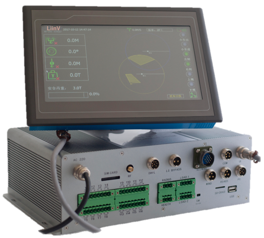
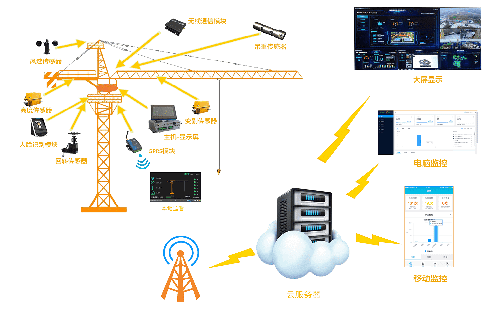
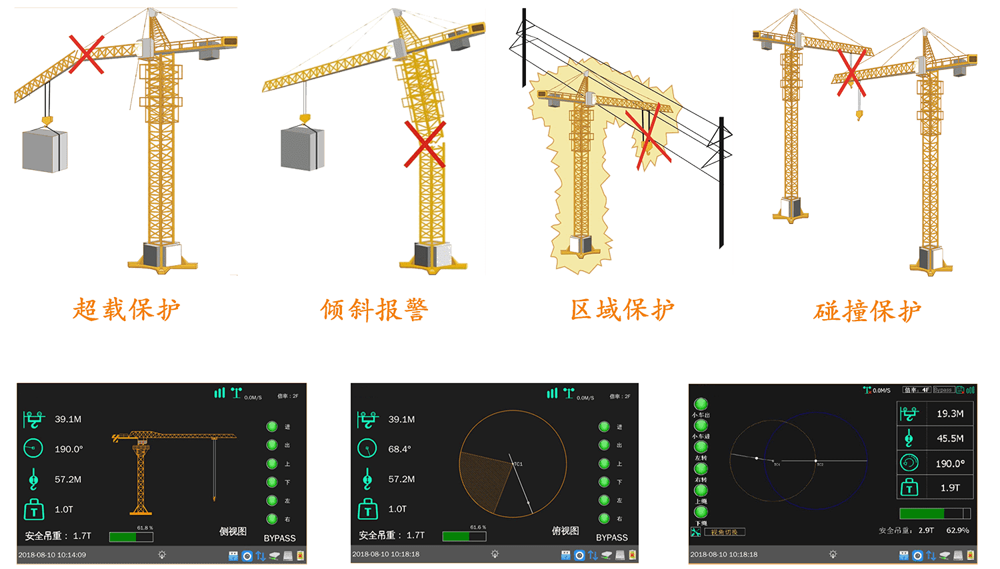

<div class='produce'>
	<div class='produce-content'>
		<div class='produce-details'>
			<div class='title-110'>
				LF-110S
			</div>
			<div class='description-110'>
				
				<p>
					<strong>LF-110S</strong>是集力矩、区域保护、防碰撞、短信报警、风速报警、黑匣子记录下载等多种功能于一体的模块化组合系统。系统采用ARM技术及WINDOWS/CE操作系统，在前几代产品优势的基础上运用模块化思路，实现塔机运营成本的降低，具有多功能，多用途，高性价比，高可靠性的特点。<br/><br/>该系统专为解决塔机在不同使用环境下需不断更换安全监控装置的问题而设计，能够适应多重复杂施工环境，帮助塔机操作员识别潜在的危险并报警。系统性能稳定、易用实用、操作过程更是简单方便，无论是单台还是多台塔机工作，通过模块化组件，能够轻松对物的不安全因素和人的不安全行为作出判断，有效防止事故的发生，另外该系统还可支持扩展视频监控功能，实现塔机可视化和塔机安全监控系统的完美结合。
				</p>
			</div>
			<div class='feature-110'>
				功能特点
			</div>
			<ul class='feature-110-descript'>
				<li>实时检测并显示塔吊的运行状态，安全看得见</li>
				<li>力矩限位，保护更全面</li>
				<li>基于塔机行为的三维群塔防碰撞功能</li>
				<li>区域保护功能，阻止小车进入被保护区域</li>
				<li>高度限位功能，更精准，带有预警减速功能</li>
				<li>工作循环记录、实时数据记录、系统修改日志记录等“黑匣子”功能</li>
				<li>钢丝绳倍率轻松切换，方便日常使用</li>
				<li>风速预警报警功能</li>
				<li>多台塔机同步协调，信息收发自如，有效防止碰撞</li>
				<li>短信报警功能，将报警状况以短信形式发送到手机</li>
			</ul>
			<div class='feature-110'>
				系统架构
			</div>
			
			<div class='feature-110'>
				应用场景
			</div>
			
		</div>
	</div>
</div>